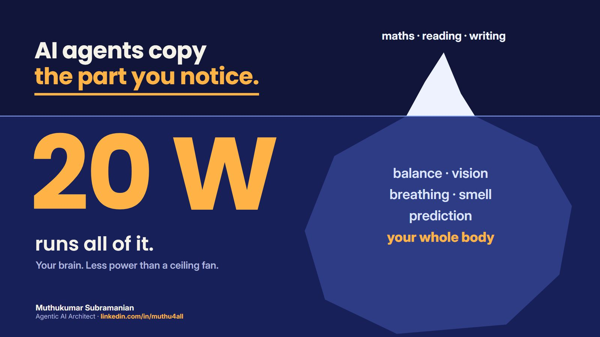
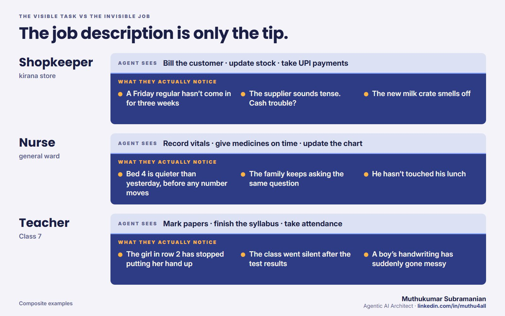
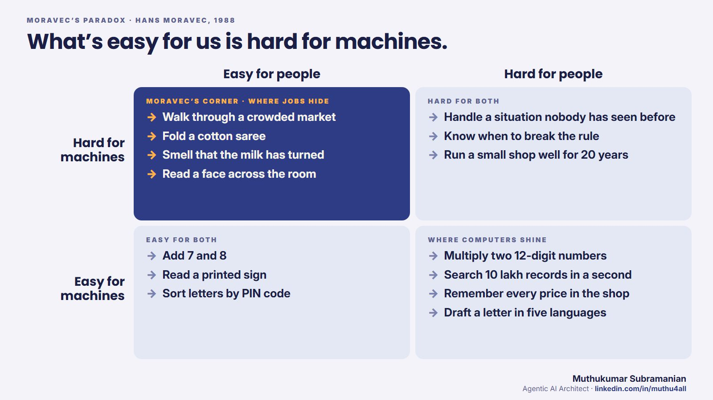
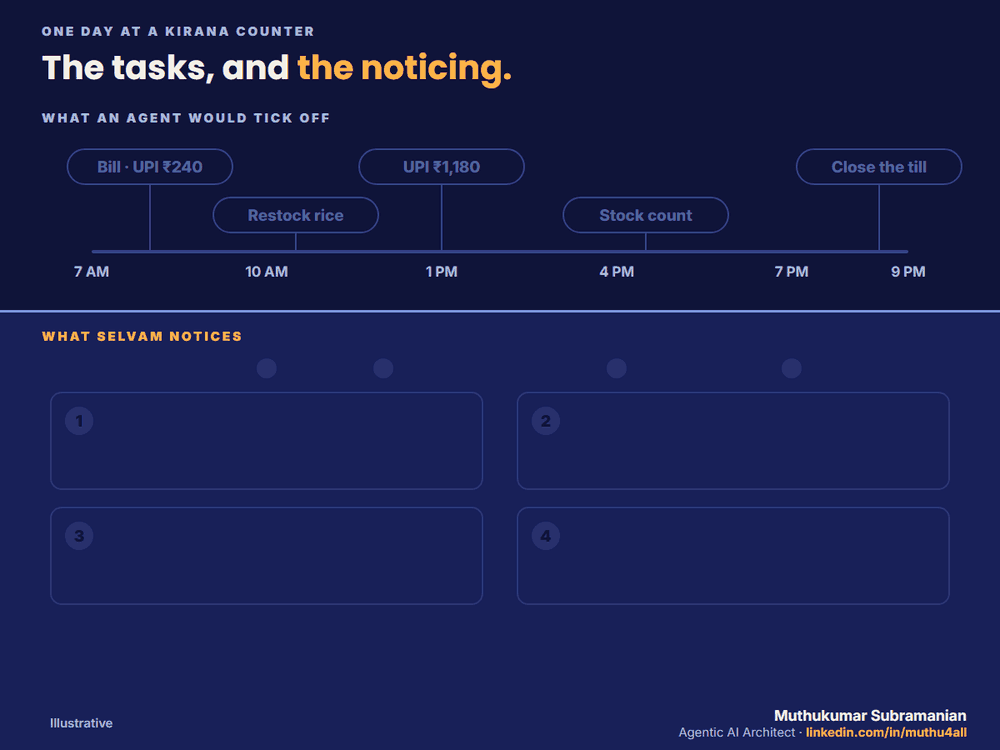

20 Watts Runs Your Whole Body. AI Agents Only Copy the Part You Notice.
By Muthukumar Subramanian · Agentic AI Architect

Saturday evening, a kirana store in Mylapore.
Selvam is billing three customers at once. He's taking a UPI payment, telling a boy which shelf the rava is on, and half-listening to a supplier on the phone. In the middle of all that, he stops, sniffs the milk crate that's just come in, and sets it aside.
Nobody asked him to. It isn't in any job description. He'd struggle to tell you how he knew.
All of that, the billing, the talking, the noticing and the keeping-his-balance-on-a-stool, runs on a brain that draws about 20 watts. Less than the ceiling fan above his head.
(Selvam and his shop are illustrative. You know a Selvam.)
The number everyone shares, and the point it misses
You've probably seen the image going around: the brain on a handful of watts, AI on billions. I like the spirit of it. But the giant number comes from a 2023 estimate of what it would take to simulate every neuron of a human brain on today's hardware. It isn't what any chatbot or agent draws.
And the watts aren't the most interesting part. What's interesting is what those 20 watts are actually spent on.
We judge AI on the tip of the iceberg
When we say an AI is "smart", we mean it does maths, reads, writes. Those are the things we do consciously, so they feel like the core of intelligence.
They're the newest part. Writing is about 5,000 years old. That's far too recent for evolution to have built a brain region for it. The neuroscientist Stanislas Dehaene calls the result "neuronal recycling": when you learn to read, a patch of visual cortex that was shaped for recognising objects and shapes gets partly repurposed for letters. Researchers call it the visual word form area. Reading runs on borrowed equipment.
Most of the brain's work is the part you never notice. Seeing. Keeping your balance. Breathing. Smell. Predicting what happens next, a step, a ball, a face. Keeping the body running. It's the operating system. It's silent because it works.
The part we call intelligence is the part the brain learned last.

The old puzzle AI keeps running into
In 1988 the roboticist Hans Moravec pointed out something odd. It was comparatively easy to get computers to adult-level performance on intelligence tests or checkers, and hard or impossible to give them the perception and movement of a one-year-old. It's now called Moravec's paradox.
Nearly forty years on, it still mostly holds. Today's AI writes a decent essay and clears tough exams. A robot that folds a cotton saree, or crosses a busy Chennai road the way a ten-year-old does, is still hard. Robots are getting better, quickly. But the gap tells you where the difficulty really is.

Every job is an iceberg too
Here's where it gets practical.
When a company plans to automate a job, it starts with the job description. Bill the customer. Update stock. Answer the ticket. Mark the papers. That's the tip. An AI agent can learn the tip, and it's learning fast.
But ask what makes someone good at the job, and you get the other part:
→ The shopkeeper notices that a regular who comes every Friday hasn't come for three weeks. Is she unwell? Did she move to the supermarket?
→ The nurse notices the patient in bed 4 is quieter than yesterday, before any number on the monitor moves.
→ The teacher notices that the girl in the second row has stopped putting her hand up.
→ The customer service lead notices that a polite customer has started using full stops. They're about to leave.
None of this is in the job description. Most people don't know they do it. Ask them what they do all day and they'll describe the tip.
So we hand an agent the tip, it does the tip well, and three months later something quietly goes wrong. Customers drift. A complaint arrives that "should have been caught". Nobody can say what changed, because what changed was never written down.
An agent does the job description. A person does the job.

So what do you actually do?
This is why I think the most useful new role right now is the forward deployed engineer (FDE). An FDE works inside the customer's team, on their real work, not from a requirements document. The titles are still settling, but the job is clear. Their first job isn't building the agent. It's making the invisible job visible.
→ Shadow, don't interview. Watch a real shift. People can't tell you what they don't know they notice.
→ Ask one question all day: "What made you stop and look twice?"
→ Sort what you find. Some signals an agent can watch better than a person (a regular's visits dropping, across 2,000 customers at once). Some only a person can catch (a smell, a tone, a quiet patient).
→ Build the agent to raise the flag, and keep the person who acts on it.
→ After go-live, watch for what you've lost, not just what you've saved.
The hard parts
I don't want to romanticise this. People miss things too. A tired nurse at the end of a double shift, a shopkeeper on a busy festival day, a manager with a pet theory. "Gut feel" is sometimes bias with good PR.
And agents can notice things people can't. No shopkeeper can track which of 2,000 customers have quietly slowed down. An agent can.
There's also a line to watch. "This regular hasn't come in for three weeks" is care in a neighbourhood shop. Done badly at scale, it's surveillance. Whoever builds the agent decides which one it is.
And honestly, some of the iceberg will move above the water. Robots will smell spoiled milk one day. I just don't think it's the next quarter, and I don't think your automation plan should assume it is.
Who should care
→ Managers and founders: before you automate a role, map its invisible half. It's usually where the value is.
→ People whose jobs are being "agent-ified": write down what you notice that isn't in your job description. That's the part of your job that's hardest to replace, and nobody knows it exists until you show them.
→ Builders: the gap between the tip and the iceberg is a product. Agents that watch for signals and hand them to people will beat agents that just tick off tasks.
Twenty watts, mostly spent on things you never notice. The real job is the same.
Your turn
Which is harder to hand to an AI agent: the task, or the noticing? One word.
Tag the colleague who always notices first.
Tomorrow morning: "How's your knee after the surgery?" Nobody told the AI agent to remember that.